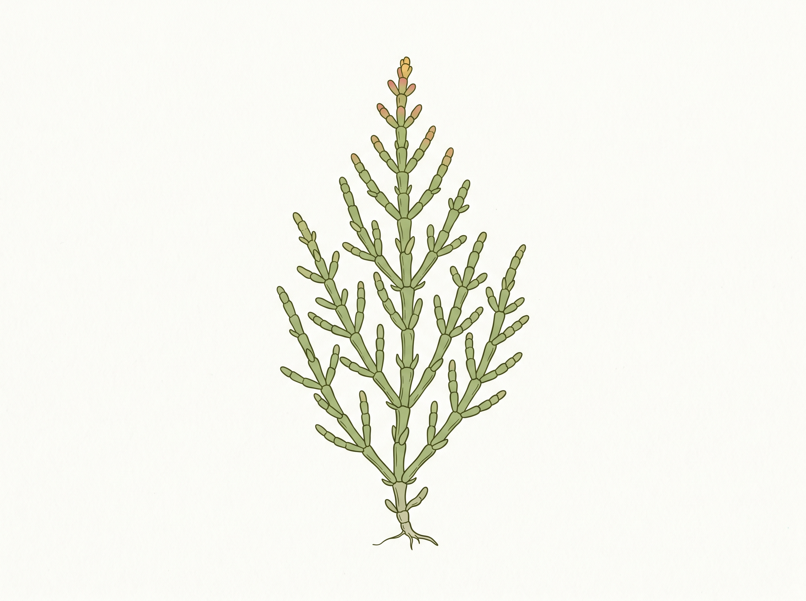

Targeted refinement01. Pickleweed
Refine · High confidence in the feature correction. Assumed taxon: Salicornia pacifica (also treated as Sarcocornia pacifica).
Reference: Fleshy, jointed, oppositely branching shoots; leaves are reduced to minute scales. The perennial plant forms mats from rhizomes; the Burke treatment describes stems to about 30 cm tall.
Observed: The jointed succulent outline works well. Repeated projecting oval appendages at the nodes read as substantial separate leaves, and the isolated upright specimen does not convey a spreading mat.
Correction: Reduce the apparent leaves to tiny collars/scales; retain the fleshy segments. Add a low branching base or small mat silhouette. Do not give it iceplant-like leaf blades.